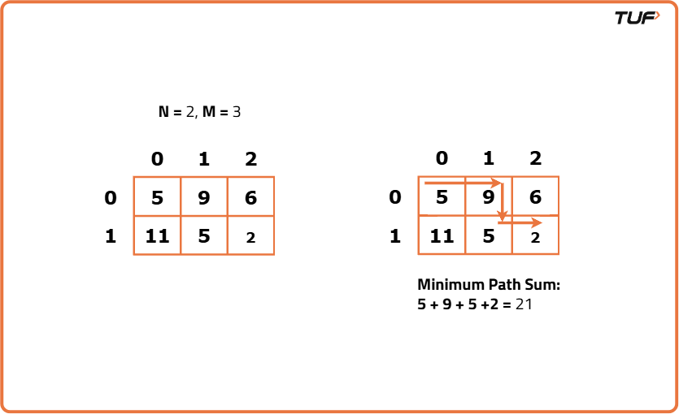
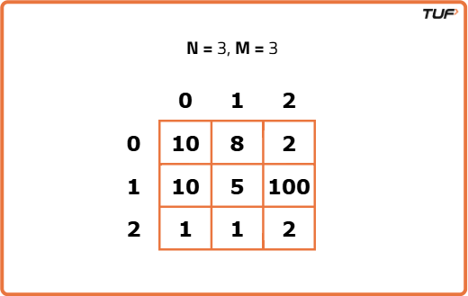
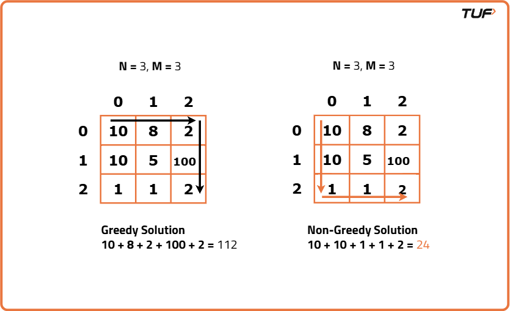
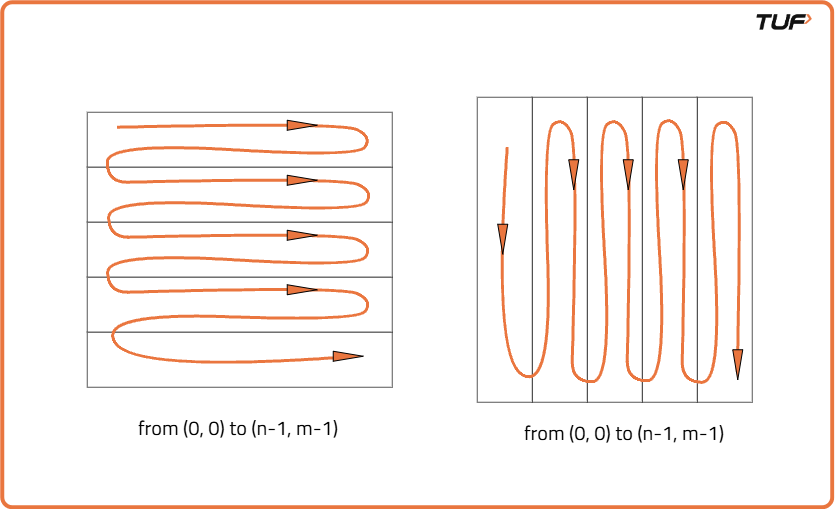
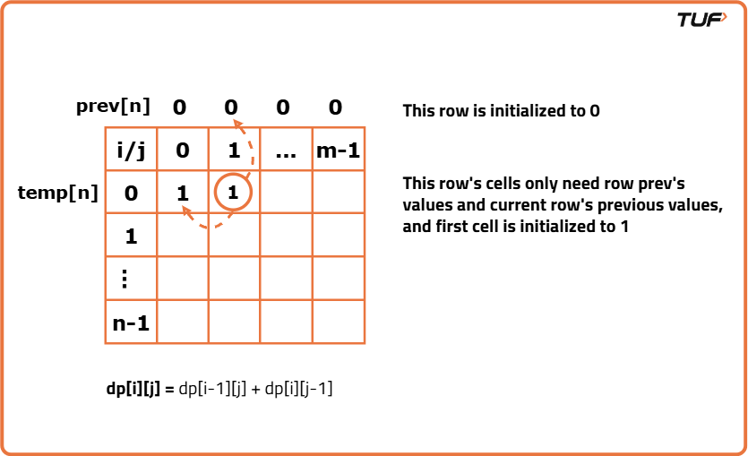
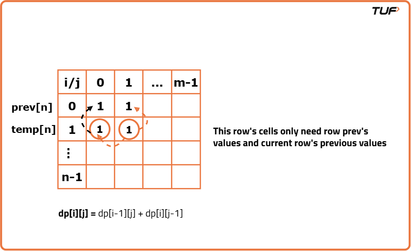

Minimum Path Sum In a Grid (DP 10)
Problem Statement: Given a m x n grid filled with non-negative numbers, find a path from top left to bottom right, which minimizes the sum of all numbers along its path.
Note: You can only move either down or right at any point in time.
Examples
Input: grid = [[5,9,6],[11,5,2]] Output: 21 Explanation: Minimum sum is achieved via path 5->9->5->2 i.e. 21.
Input : grid = [[1,2,3],[4,5,6]] Output: 12 Explanation : Minimum sum is achieved via path 1->2->3->6 i.e. 12.
Disclaimer: It's highly recommend trying to solve it before looking at the solution.
Memoization Approach
Algorithm
This question is a slight modification of the question discussed in Grid Unique Path 2 . In the previous problem, there were obstacles whereas this problem has cost associated with a cell and we need to return the minimum cost path.
Why a Greedy Solution doesn’t work?
As we have to return the minimum path sum, the first approach that comes to our mind is to take a greedy approach and always form a path by locally choosing the cheaper option. This approach will not give us the correct answer. Let us look at this example to understand:
At every cell, we have two choices: to move right and move down. Our ultimate aim is to provide a path that provides us the least path sum. Therefore at every cell, we will make the choice to move which costs are less.
Therefore, the other alternative left to us is to generate all the possible paths and see which is the path with the minimum path sum. To generate all paths we will use recursion.
Why a Greedy Solution doesn’t work?
As we have to return the minimum path sum, the first approach that comes to our mind is to take a greedy approach and always form a path by locally choosing the cheaper option. This approach will not give us the correct answer. Let us look at this example to understand:

At every cell, we have two choices: to move right and move down. Our ultimate aim is to provide a path that provides us the least path sum. Therefore at every cell, we will make the choice to move which costs are less.

- Figure on the left gives us a greedy solution, where we move by taking the local best choice.
- Figure on the right gives us a non-greedy solution.
Therefore, the other alternative left to us is to generate all the possible paths and see which is the path with the minimum path sum. To generate all paths we will use recursion.
- Start from the bottom-right cell (destination) and move toward the top-left (starting point) recursively.
- For each cell, explore the minimum path sum by going either up or left (since we are moving backward in recursion).
- Use a 2D memoization table to store results of subproblems to avoid recalculating them.
- The base case is the top-left cell where the path sum is simply the grid value at that position. If we go out of bounds (negative index), we return a large number to avoid considering invalid paths.
- At each step, take the grid value at the current cell and add it to the minimum of the path sums from the top and left cells, then memoize and return.
Code
#include <bits/stdc++.h>
using namespace std;
// Class containing the solution logic
class Solution {
public:
// Function to calculate minimum path sum with memoization
int minPath(int i, int j,
vector<vector<int>> &grid,
vector<vector<int>> &dp) {
// If we are at (0,0), return that cell's value
if (i == 0 && j == 0)
return grid[0][0];
// If out of bounds, return large number
if (i < 0 || j < 0)
return 1e9;
// If already computed, return from dp
if (dp[i][j] != -1)
return dp[i][j];
// Compute path by going up
int up = grid[i][j] +
minPath(i - 1, j, grid, dp);
// Compute path by going left
int left = grid[i][j] +
minPath(i, j - 1, grid, dp);
// Store the minimum in dp and return
return dp[i][j] = min(up, left);
}
// Main function that initializes dp and calls helper
int minPathSum(vector<vector<int>> &grid) {
int n = grid.size();
int m = grid[0].size();
// Create dp table initialized with -1
vector<vector<int>> dp(n,
vector<int>(m, -1));
// Start from bottom-right corner
return minPath(n - 1, m - 1, grid, dp);
}
};
// Driver function
int main() {
vector<vector<int>> grid = {
{5, 9, 6},
{11, 5, 2}
};
Solution obj;
cout << "Minimum sum path: "
<< obj.minPathSum(grid) << endl;
return 0;
}
Complexity Analysis
Time Complexity: O(N*M), at max, there will be N*M calls of recursion..Space Complexity: O(M+N) + O(N*M), additional space for recursion stack and memo table.
Tabulation Approach
Algorithm
Tabulation is the bottom-up approach, which means we will go from the base case to the main problem. The steps to convert to the tabular solution are given below:
- Declare a dp[] array of size [n][m].
- First initialize the base condition values, i.e dp[0][0] = matrix[0][0]
- Our answer should get stored in dp[n-1][m-1]. We want to move from (0,0) to (n-1,m-1). But we can’t move arbitrarily, we should move such that at a particular i and j, we have all the values required to compute dp[i][j].
- If we see the memoized code, values required for dp[i][j] are: dp[i-1][j] and dp[i][j-1]. So we only use the previous row and column value.
- We have already filled the top-left corner (i=0 and j=0), if we move in any of the two following ways(given below), at every cell we do have all the previous values required to compute its value.

- We can use two nested loops to have this traversal
- Whenever i>0 , j>0, we will simply mark dp[i][j] = matric[i][j] + min(dp[i-1][j],dp[i][j-1]), according to our recursive relation.
- When i=0 or j=0, we add to up( or left) 1e9, so that this path can be rejected.
Code
#include <bits/stdc++.h>
using namespace std;
// Class to solve the problem
class Solution {
public:
// Function to calculate minimum path sum
int minPathSum(vector<vector<int>> &matrix) {
int n = matrix.size();
int m = matrix[0].size();
// Create DP table
vector<vector<int>> dp(n, vector<int>(m, 0));
// Fill the table
for (int i = 0; i < n; i++) {
for (int j = 0; j < m; j++) {
// First cell initialization
if (i == 0 && j == 0)
dp[i][j] = matrix[i][j];
else {
// Calculate from top
int up = matrix[i][j];
if (i > 0) up += dp[i - 1][j];
else up += 1e9;
// Calculate from left
int left = matrix[i][j];
if (j > 0) left += dp[i][j - 1];
else left += 1e9;
// Take minimum
dp[i][j] = min(up, left);
}
}
}
// Return result
return dp[n - 1][m - 1];
}
};
// Driver function
int main() {
vector<vector<int>> matrix{
{5, 9, 6},
{11, 5, 2}
};
Solution obj;
cout << "Minimum sum path: " << obj.minPathSum(matrix) << endl;
return 0;
}
Complexity Analysis
Time Complexity: O(N*M), entire grid is visited atleast once.Space Complexity: O(N*M), space used for DP array.
Space Optimization Approach
Algorithm
If we closely look at the relation,
dp[i][j] = matrix[i][j] + min(dp[i-1][j] + dp[i][j-1]))
We see that we only need the previous row and column, in order to calculate dp[i][j]. Therefore we can space optimize it.
Initially, we can take a dummy row (say prev) and initialize it as 0. Now the current row (say temp) only needs the previous row value and the current row’s value in order to calculate dp[i][j].
At the next step, the temp array becomes the prev of the next step and using its values we can still calculate the next row’s values.
At last prev[n-1] will give us the required answer.
dp[i][j] = matrix[i][j] + min(dp[i-1][j] + dp[i][j-1]))
We see that we only need the previous row and column, in order to calculate dp[i][j]. Therefore we can space optimize it.
Initially, we can take a dummy row (say prev) and initialize it as 0. Now the current row (say temp) only needs the previous row value and the current row’s value in order to calculate dp[i][j].

At the next step, the temp array becomes the prev of the next step and using its values we can still calculate the next row’s values.

At last prev[n-1] will give us the required answer.
Code
#include <bits/stdc++.h>
using namespace std;
class solution{
public:
// Function to find the minimum sum path in grid
int minSumPath(int n, int m, vector<vector<int>> &matrix) {
// Create 1D vector for previous row
vector<int> prev(m, 0);
// Loop through each row
for (int i = 0; i < n; i++) {
// Create temp vector for current row
vector<int> temp(m, 0);
// Loop through each column
for (int j = 0; j < m; j++) {
// If at the start cell
if (i == 0 && j == 0)
temp[j] = matrix[i][j];
else {
// Take up direction if valid
int up = matrix[i][j];
if (i > 0)
up += prev[j];
else
up += 1e9;
// Take left direction if valid
int left = matrix[i][j];
if (j > 0)
left += temp[j - 1];
else
left += 1e9;
// Take minimum of both directions
temp[j] = min(up, left);
}
}
// Move current row to previous
prev = temp;
}
// Return result at destination
return prev[m - 1];
}
};
int main() {
vector<vector<int>> matrix{
{5, 9, 6},
{11, 5, 2}
};
int n = matrix.size();
int m = matrix[0].size();
Solution obj;
cout << "Minimum sum path: " << obj.minSumPath(n, m, matrix) << endl;
return 0;
}
Complexity Analysis
Time Complexity: O(N*M), every element of grid is visited atleast once.Space Complexity: O(N), we only use one array for storing rows.